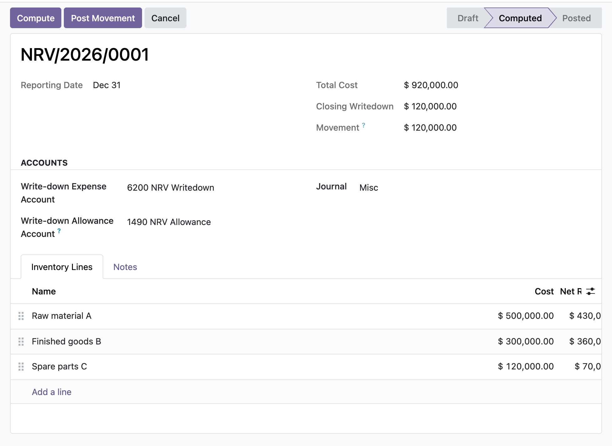

Carry inventory at the lower of cost and net realisable value, post only the period movement to a write-down expense against an allowance, and reverse recoveries capped at the amount previously recognised.
Each line records cost and net realisable value; the required write-down is the excess of cost over NRV, floored at zero so it never carries inventory above cost. The run totals the closing write-down and shows the exact movement before you post anything.
When NRV recovers, the module reverses the write-down but only up to the amount previously recognised. Because every line floors its write-down at zero, a recovery can release the allowance back toward zero and no further, so the new carrying amount is the lower of cost and the revised NRV.
Once a run is posted it recognises a balanced, sealed ledger movement. Its date, accounts, journal and inventory lines are frozen against ORM writes, line inserts, moves and deletes. To change it you reverse it, and only an EH Accounting Manager can do that.
At close you open a new NRV run for the reporting date, add a line per finished-goods or raw-material group, and enter each item's cost and net realisable value. The run rolls the opening write-down forward from the last posted run for the same product and flags any line whose opening does not tie out. You compute, review the movement, then post: the manager-gated entry debits the write-down expense and credits the allowance, or releases the allowance on a recovery, capped at what was recognised before. The run and its entry are stamped, sealed and frozen for the audit file.
In the shipped code today, each one a place where a cheaper module silently does the wrong thing.
Each line floors its write-down at zero, so a net realisable value recovery can only release the allowance back toward zero and can never push inventory above cost (IAS 2.33).
The run posts the closing write-down less the opening position, not the gross figure, so re-running a period does not double-charge the profit and loss account.
The opening write-down defaults to the prior posted run's closing write-down for the same product, and a manual override is flagged so a later product or date change does not silently discard the value you entered.
A per-line opening tie-out flag lights when the opening write-down disagrees with the prior posted run's closing figure for the same product, surfacing broken roll-forwards instead of hiding them.
A missing expense or allowance account, a missing journal, a wrong state, or a nil movement each raise an explicit message rather than posting a partial or empty entry.
odoo 19 inventory write down, IAS 2 net realisable value, lower of cost or NRV odoo, inventory impairment odoo, stock write-down allowance, NRV reversal accounting, net realisable value odoo community, inventory write-down journal entry, period-end inventory assessment, IAS 2 write-down reversal cap, write-down expense allowance account, odoo accounting IFRS inventory

Inventory net realisable value runThe IAS 2 lower of cost and net realisable value test per line, writing each item down to net realisable value and totalling the write-down to profit or loss.
Premium ERP Heritage modules that extend the same stack, each built to the same engineering bar.
Post Irish payslips to the general ledger on the Irish chart of accounts
Interactive drag and drop Gantt planner for Odoo 17 Community project tasks with a deterministic server side sche...
Employment Hero Connector is the integration core of the ERP Heritage Employment Hero suite, providing per compan...
The United Kingdom country pack for the ERP Heritage Employment Hero integration
Sync Employment Hero employees, departments and payroll bank details into standard Odoo Community HR over the pla...
Inbound webhook receiver for the Employment Hero people and payroll platform on Odoo 17 Community